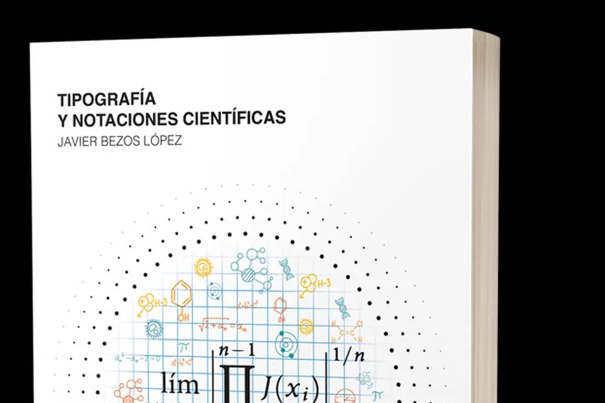
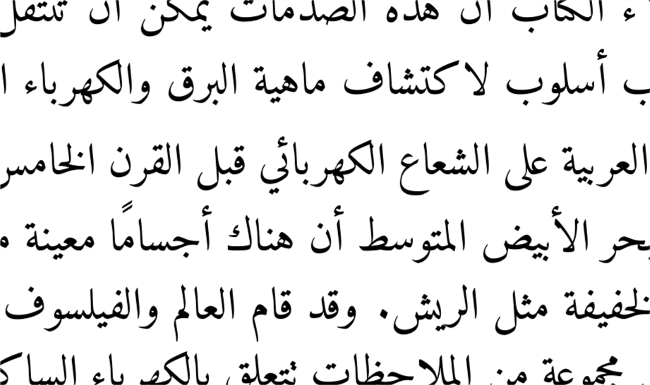

Javier Bezos
Tipografía, ortotipografía y estilo del español
Maquetación y composición de textos multilingües, técnicos y científicos
|  |
Tipografía y
notaciones científicas Soy autor de la obra de referencia en español sobre lo relacionado con la ortotipografía en textos científicos: matemáticas, química, unidades, nomenclatura, figuras, índices... |
|  |
Textos multilingües y localización Mi principal trabajo actual en el mundo de LaTeX es el desarrollo de sistemas multilingües con el paquete babel y Unicode. |

|
Consultoría ortotipográfica Con años de experiencia, tanto por la implicación en la FundéuRAE como de modo independiente, y el aval de haber sido nombrado socio de honor de la Unión de Correctores de España. |
|
Desarrollo de sistemas para la generación de documentos Con experiencia no solo en el sistema de composición tipográfica LaTeX, de cuyo equipo de desarrollo formo parte, sino también PHP, XML, Python, Lua, Tcl, JavaScript, PDF... También VisualBasic para InDesign. |
|
Formación He impartido cursos de formación en universidades y empresas sobre tipografía, lengua, maquetación con LaTeX..., tanto presenciales como virtuales. Además, he ofrecido conferencias en Francia, Bélgica, Japón... |
Links to this site are welcome
Se agradecen los enlaces a este sitio
Destacados
- El Libro de estilo de la RAE
- Página sobre el paquete colorspace
- Códigos abreviados de meses
- Topónimos: nombres de lugares extranjeros
- Ortotipografía básica de los signos de puntuación
- Ortotipografía: origen, principios, funciones
- Uso de las minúsculas
- Uso de la cursiva y Uso de la redonda
- titleps for fancyhdr users
- Llaves, paréntesis e integrales extensibles
- Unidades en la Gramática académica